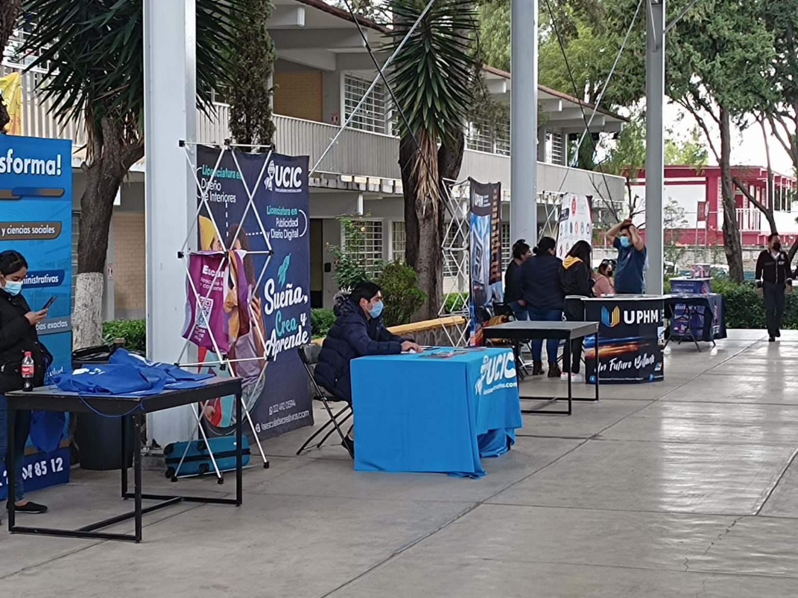
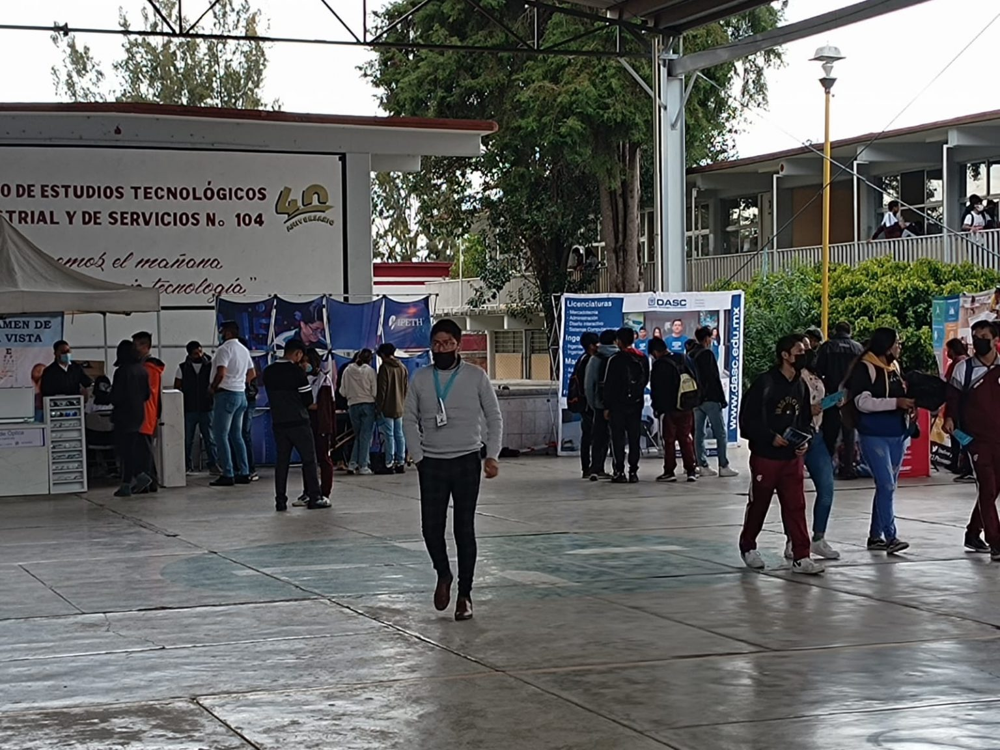
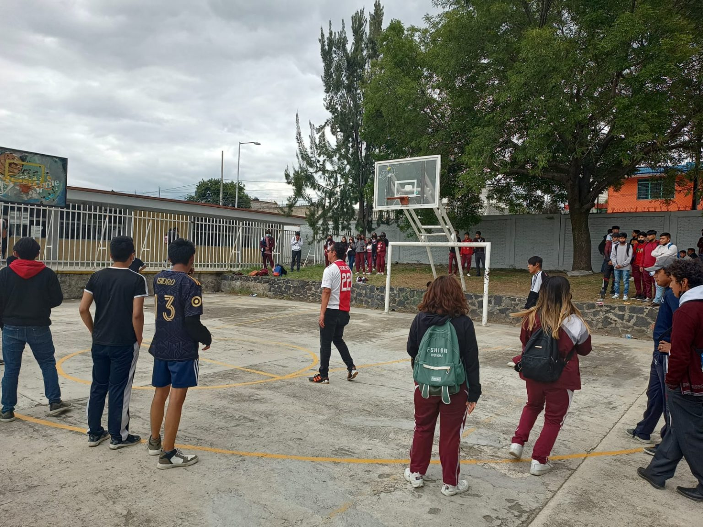
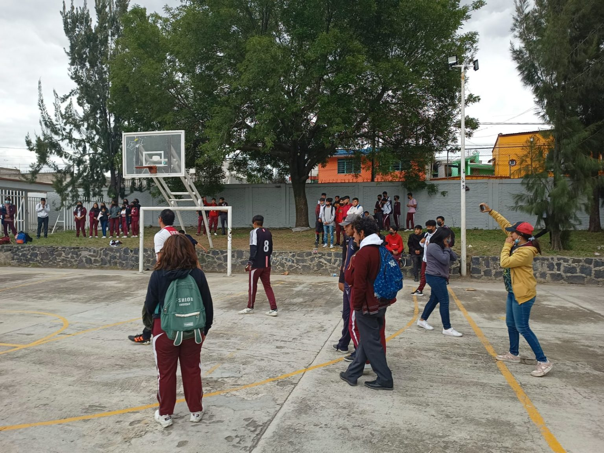

Aniversario CETIS 104
Este año, el CETIS 104 celebra un hito significativo: ¡sus 40 años de excelencia educativa! Desde su fundación, la institución se ha comprometido a brindar una educación de calidad que prepare a los estudiantes para enfrentar los retos del mundo moderno.
A lo largo de estas cuatro décadas, el CETIS 104 ha formado a miles de jóvenes en diversas especialidades, contribuyendo al desarrollo profesional y personal de cada uno de ellos. Este aniversario es un testimonio del esfuerzo y dedicación de maestros, alumnos y padres de familia que han sido parte de esta gran comunidad educativa.
La celebración incluirá actividades culturales, deportivas y académicas que reflejan el espíritu de unidad y orgullo de pertenecer a esta institución. El CETIS 104 se enorgullece de mirar hacia el futuro, con la firme convicción de seguir siendo un pilar en la educación y formación de jóvenes comprometidos con su país. ¡Felicidades a todos los que han formado parte de esta historia!